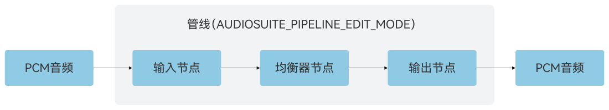

index.html → app.js
main() 绑定页面；runTask() 响应处理按钮。
AUDIO PROCESSING / LOCAL WORKSPACE
离线音频编辑实验室
从一段声音开始，理解每个节点如何改变它。
本地算法运行原始输入 · 可见管线 · 本次输出
01 / EQUALIZER
塑造音色，保留完整声音
当前执行引擎Browser DSP / Web Audio鸿蒙版使用 AudioSuite，算法与性能分别验证
先看懂这条管线
华为官网 · 基础离线编辑示意图
01
输入节点
按需读取音频样本，把声音送入处理流程。
02
处理节点
均衡器调整各频段的增益。
03
输出节点
收集处理结果，应用将它编码为 WAV。
什么叫管线？什么叫离线渲染？
管线是由节点和连接关系组成的一次音频处理流程。节点各自执行读取、音效或输出等工作，箭头表示数据的流向。分叉可以产生多路结果，多路输入也可以在混音节点汇合。
离线渲染会主动请求并计算音频数据，不需要边播放边处理。鸿蒙端调用 RenderFrame 或 MultiRenderFrame 拉取结果；网页会完成 DSP 运算后才开放结果试听。图中的 PCM 是音频采样数据，WAV 是保存这些数据的文件容器。
03 / RESULT
等待运行本次计算结果
还没有处理结果。选择任务并点击「运行算法」。
运行记录 · 数据来自哪里
未读取任何预生成效果音频。
从哪里开始读代码？
dsp.js → AudioLab.run()
FFT 分离、EQ、声场、混音、WAV 编码。
Index.ets → engine.run()
N-API → RunAudioJob() → AudioSuite。